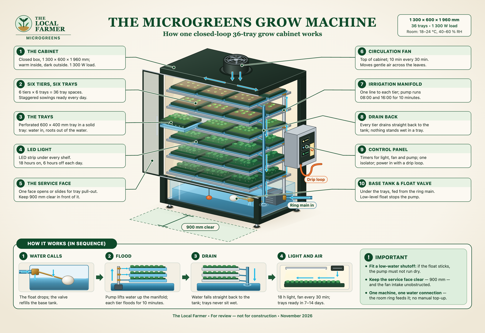
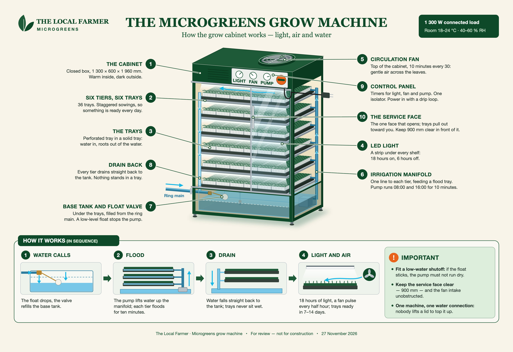

Thirty-six trays in one cabinet, one water connection, and a loop that runs itself: the float calls water,
the pump floods a tier, the tray drains straight back, the light and the fan do the rest.
Plate drawn 27 November 2026 · cabinet 1 300 × 600 × 1 960 mm · for review, not for construction

The grow machine, cut open. Ten numbered parts, and the four-step loop underneath.
What the plate commits to
36 tray spaces — six tiers, six trays each, a standard 600 × 400 mm perforated tray in a solid tray.
Light 18 hours on, 6 off — one LED strip under every shelf, nothing stacked above the strip.
Air for ten minutes every half hour — a fan at the top of the cabinet, gentle across the leaves.
Water twice a day, ten minutes — the pump lifts from the base tank at 08:00 and 16:00, floods each tier, and every tier drains straight back.
One connection per machine — the room ring main feeds the base tank through a float valve; a low-level float stops the pump, so nobody tops anything up by hand.
900 mm clear in front of the service face — trays come out toward the operator, nothing else lives in that strip.
How it was made, and by whom
I wrote the brief — the machine's real dimensions, the tier and tray count, the light, fan and pump schedules, the
float and drain arrangement — and handed it to Antigravity on Gemini 4 with your humidifier sheet as
the style reference. It drew this plate.
Claude Opus was given the identical brief in parallel. Its plate is below, beside the one I shipped, so you can see
what the same words produced in two different hands.
Same words, same reference sheet, same machine data. Left is the plate I shipped; right is Claude Opus.
Antigravity drew the tighter cabinet — trays, light strips and manifold read at a glance. Claude's is the more
decorated of the two, softer shading and a glassier tank, but its callouts wander and the trays thin out into shelves,
so it stays the second attempt.
Antigravity · Gemini 4 — the plate in use. Parts read clearly and the numbers run down each column in order.

Claude Opus — kept for comparison. Prettier surface, weaker structure: trays read as shelves and the badge order jumps across the drawing.
The correction both plates walked into
Six trays of 600 × 400 mm cannot sit on a 1 300 × 600 mm shelf, and both drawings quietly
narrowed the trays to make the count work. What does fit is six trays of 400 × 300 mm — three
across the width, two deep — which gives the 36 spaces the room data asks for. Either the tray size or the count is
wrong on the source sheet, so it is worth confirming with the manufacturer before anything is ordered.